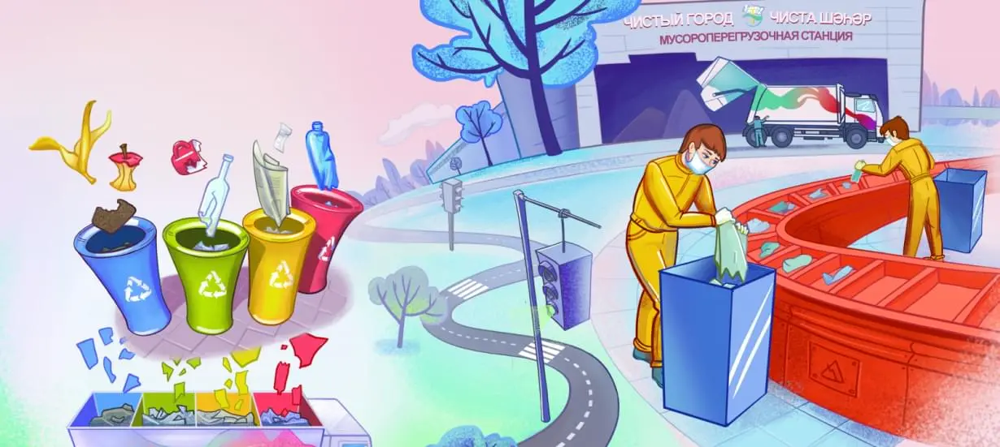

О проекте
«Экологический дневник» – это проект в виде электронной рабочей тетради.

Электронная рабочая тетрадь предназначена для исследовательской работы и факультативных занятий среди учащихся начальной школы (2–3 класс) и учащихся «экологических» классов Республики Татарстан в течение учебного года.
Тетрадь содержит системную и наглядную информацию об экологии, которая способствует вовлечению детей в изучение окружающей среды и приобретению ими практических навыков разумного и бережного отношения к природным ресурсам своей родины, полезных экологических привычек, формированию чувства любви к окружающему миру, природе родного края и воспитанию экологически грамотных граждан.